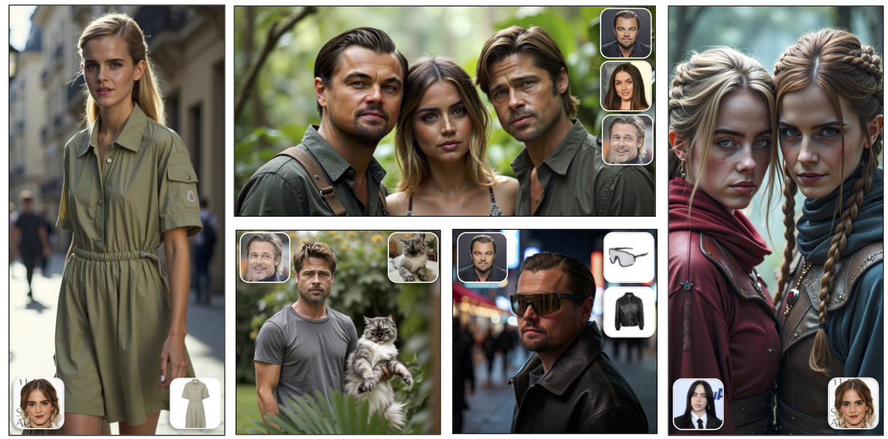
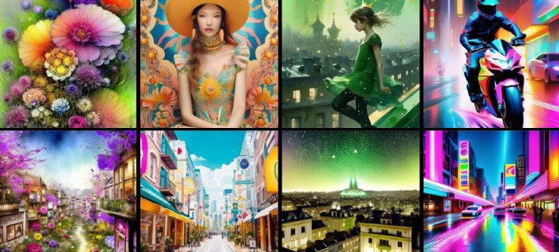

Hidir Yesiltepe
PhD Student at Virginia Tech
I am a PhD student at Virginia Tech where I am affiliated with the Sanghani Center for Artificial Intelligence and Data Analytics where I am supervised by Pinar Yanardag. My research specializes in controllable video generation where I have explored broad spectrum of topics including Motion Transfer, Semantic Video Editing, Video Super-Resolution, Autoregressive Video Distillation, and Novel View Synthesis. Previously, I was interned as a Research Intern at Adobe and Applied Scientist Intern at Amazon.
Prior to my PhD, I graduated from METU Computer Engineering. During my Bachelor's, I had the opportunity to conduct generative modeling research at KTH Royal Institute of Technology in Sweden and University of Edinburgh in UK.
News
| Sep, 2025 | Dynamic View Synthesis as an Inverse Problem has been accepted at NeurIPS 2025! |
|---|---|
| Sep, 2025 | LoRAShop has been accepted at NeurIPS 2025 as a Spotlight paper! |
| May, 2025 | Joined Adobe as a Research Intern. |
| May, 2025 | Recognized as a Outstanding Reviewer at CVPR 2025. |
| May, 2025 | Our proposal for Personalization in Generative AI Workshop at ICCV’25 has been accepted! |
| Sep, 2024 | StyleBreeder has been accepted at NeurIPS 2024! |
| May, 2024 | Joined Amazon as an Applied Scientist Intern. |
| Feb 2024 | RAVE has been accepted as a Highlight paper at CVPR 2024! |
| Aug, 2023 | Started PhD at Virginia Tech. |
Selected Publications
-
-
NeurIPS
 LoRAShop: Training-Free Multi-Concept Image Generation and Editing with Rectified Flow TransformersNeurIPS, 2025 (Spotlight - Top 3%) -
NeurIPS
 Stylebreeder: Exploring and Democratizing Artistic Styles Through Text-to-Image ModelsNeurIPS, 2024 -
RAVE: Randomized Noise Shuffling for Fast and Consistent Video Editing with Diffusion ModelsCVPR, 2024 (Highlight)